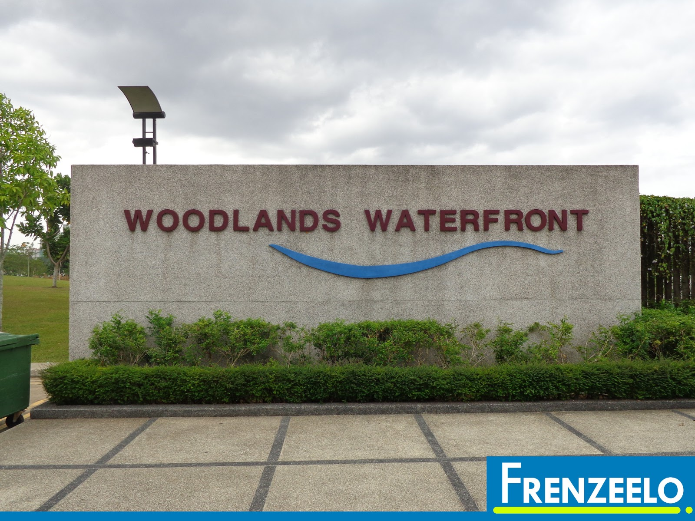

Hello!! I will be sharing a hidden local attraction hidden in Woodlands called Woodlands Waterfront Park!
A scenic and tranquil coastal park offering an exceptional view of the sea from the north, Woodlands Waterfront is a favourite among residents and visitors young and old. The 11-hectare park houses a large playground with a wide range of equipment and a 1.5-kilometre-long waterfront promenade, making it an ideal spot for recreational activities.
Visitors can enjoy an unobstructed and panoramic view of the entire coastal park and the Straits of Johor from high vantage points and rest shelters placed along the scenic trail. The undulating terrain of the park is also fitted with dedicated jogging and cycling tracks, providing exercise enthusiasts with both adventurous and challenging trails.
Woodlands Waterfront forms part of the comprehensive network of parks and park connectors in the area, improving accessibility to the waterfront. It is also linked to the existing Admiralty Park via the 25 km Northern Explorer Loop.
Located up north, Woodlands Waterfront Park is just a few minutes walk away from the newly opened Thomson-East Coast Line station called Woodlands North MRT station.
You can even catch a view of JB from the bridge!
Cycling/inline skating is an activity that many visitors to Woodlands Waterfront Park enjoy. Come with your own bicycle and skates and have fun in the park.
The park, which overlooks the straits of Johor, is a great place for morning and evening strolls. With its new multi-generational fitness corner/playground, families of all ages can bond together while leading a healthy lifestyle.
A restaurant by the seaside called Rasa Istimewa Waterfront Restaurant can be found just minutes away from the main bridge.
You can enjoy fresh and delicious seafood while having a full sea view by your side.
It operates daily from 12pm-12am but do make reservation in advance to avoid disappointments!
Guide written by Jimmy Neo